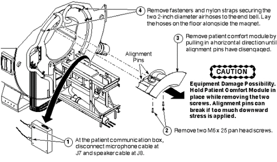
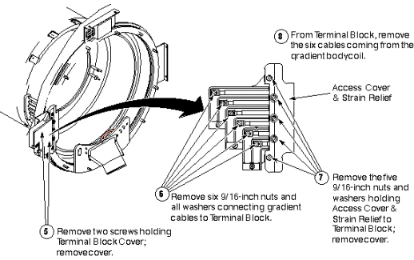
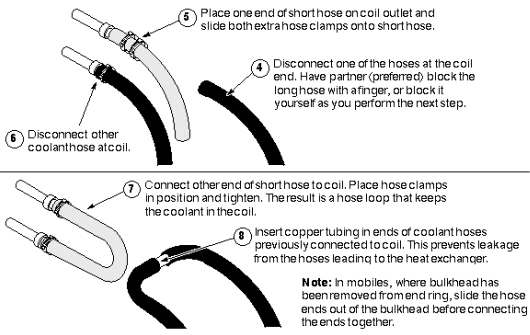

Operating Documentation
Direction 5133315-3, Rev# 14
Signa EXCITE HD 1.5T Service Methods
Module Version 1.0, Version Date 5/3/07
Operating Documentation |
| Required Persons | Preliminary Reqs | Procedure | Finalization |
|---|---|---|---|
| 4 minumum |
| Item | Qty | Effectivity | Part# | Manufacturer | |
|---|---|---|---|---|---|
| Epoxy-filled Gradient Coil cart (2134810), cradle (2134810-2), and accessory kit (2134810-4). | 1 | - | 2144093 | - | |
| Class 1 electric rider lift truck, 4-wheel, rated at 6000 lbs (in case the coil, cart, and cradle must all be lifted together— a necessity in mobiles); with forks a minimum of 56 inches long; with side shifter for easy width adjustment and lateral movement of forks. | 1 | - | n/a | - | |
| Non-magnetic tool kit | 1 | - | 46-320273G1, G2, G3, or G4 | - | |
| 12-inch length of 1/2-inch I.D. hose | 1 | - | - | - | |
| 2 hose clamps for 1-inch O.D. hose | 1 | - | - | - | |
| 4-inch-long piece of copper tubing, 1/2-inch O.D. | 1 | - | - | - | |
| Roll of paper toweling | 1 | - | - | - | |
| Pair of latex gloves | (optional) | - | - | - | |
| Non-magnetic torpedo level or similar | 1 | - | - | - | |
| ||||
| POSSIBLE EYE INJURY! | ||||
| WORKING WITH THE COOLANT IN THE EPOXY-FILLED GRADIENT COIL MAKES SPLASHING POSSIBLE. THIS COULD CAUSE EYE INJURY. | ||||
| BE SURE TO WEAR SAFETY GLASSES. |
| Condition | Reference | Effectivity |
|---|---|---|
Verify that the Epoxy-filled Gradient Coil accessory kit contains all the parts listed in Kit Contents. | - | - |
Remove bridge first - Bridge must be removed before you can remove either end bell. | - | - |
Removing Rear Patient Comfort:
| NOTE: | Microphone and speaker cables in mobiles - If you're working in a mobile, these cables will have already been removed prior to the removal of the rear pedestal. |
| NOTE: | Equipment damage possibility. Hold Patient Comfort Module in place while removing the two screws that secure it. The alignment pins can break if too much downward stress is applied. |
Illustration 1: REMOVE FRONT PATIENT COMFORT ITEMS

Disconnecting Incoming Power:
Illustration 2: DISCONNECT INCOMING POWER

Removing Rear End Bell:
| NOTE: | Possible equipment damage. When moving the Body Coil Drive Cables (usually colored blue), handle them with care. Do not kink them, or bend them sharply; damage can occur. |
Illustration 3: REMOVING REAR END BELL

Disconnecting Cooling System:
| ||||
| POSSIBLE EYE INJURY! | ||||
| WORKING WITH THE COOLANT IN THE EPOXY-FILLED GRADIENT COIL MAKES SPLASHING POSSIBLE. THIS COULD CAUSE EYE INJURY. | ||||
| BE SURE TO WEAR SAFETY GLASSES. |
| ||||
| Personal contamination possibility. To avoid possible contamination from contact with the coolant used in the gradient coil assembly, wear latex gloves. Failing that, be sure to wash your hands with soap and water as soon as the hose connections are completed. | ||||
| ||||
| Coolant spillage possibility. The gradient coil cooling system is pressurized. Turn off the heat exchanger before disconnecting the coolant hoses at the rear of the magnet. This takes pressure off of the system, and helps avoid coolant from being sprayed all over the immediate area when hoses are removed from failed coil. | ||||
| NOTE: | Anti-freeze in coil - Depending on coolant hose length, the gradient coil assembly, hoses, and heat exchanger may hold as much as five gallons of coolant. Thirty-five percent of this is anti-freeze, which prevents the ionized water from freezing when the coil is shipped. When the hoses are removed from the coil, approximately two gallons of coolant remain in the coil. |
| NOTE: | Four hands are better than two - While it is possible for one person to disconnect the coolant hoses at the rear of the body coil, it is easier if two people do it, and there is less chance of spilling the coolant. |
| NOTE: | Rear bulkhead in mobiles - In mobiles, where bulkhead has been removed from end ring, you might choose to slide the hose ends out of the bulkhead before connecting the ends together. |
Disconnecting Cooling System: Steps 1–3
Illustration 4: DISCONNECTING COOLING SYSTEM: STEPS 1–3

| NOTE: | Four hands are better than two - While it is possible for one person to disconnect the coolant hoses at the rear of the body coil, it is easier if two people do it, and there is less chance of spilling the coolant. |
Disconnecting Cooling System: Steps 4–8
Illustration 5: DISCONNECTING COOLING SYSTEM: STEPS 4–8

No finalization steps.